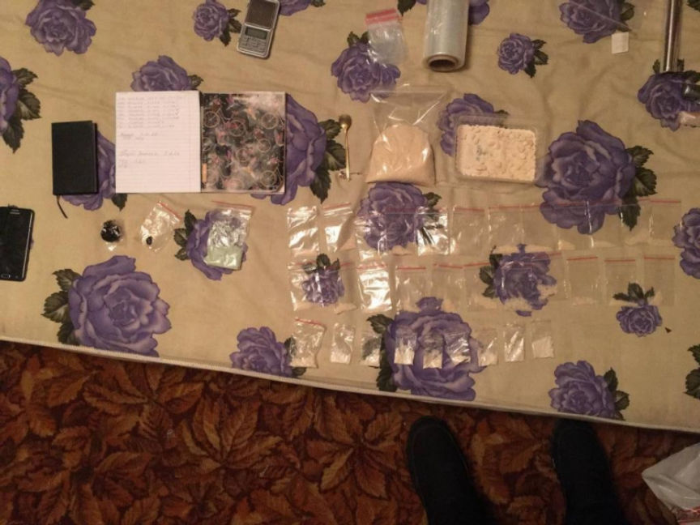
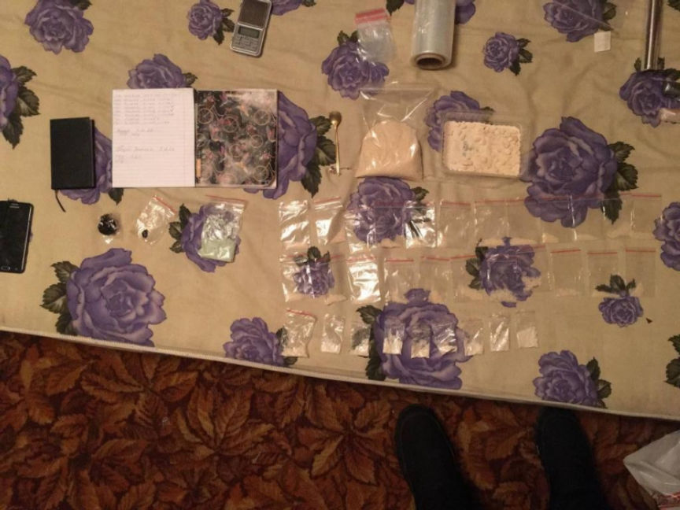

Four Arrested for Distributing Drugs on The Dark Web
Authorities in Ryazan, Russia, arrested four suspects accused of distributing large quantities of drugs through the dark web.

According to a press release by the Ministry of Internal Affairs of Russia, the suspects, three men and a woman, played different roles in the sale and distribution of wholesale and retail quantities of drugs via an undisclosed dark web drug store.
Investigations into the operations of the drug store allegedly established that the suspects communicated through an undisclosed instant messaging platform. They also found out that the group acquired the drugs from a single supplier.
On uncovering the identities of the suspects, the investigators discovered that the group was led by a 24-year-old man who was also in charge of running the dark web drug store. The second suspect, a 23-year-old man was in charge of acquiring apartments used to store the drugs they sold on the dark web. The third and fourth suspects, a 26-year-old man and a 19-year-old woman, were charged with storing and packaging the drugs according to the orders received by the group leader.
The investigators executed arrest and search warrants against the suspects on January 13, 2023. The searches resulted in the seizure of 556 grams of methylephedrine and 45 grams of hashish from an apartment used as a storage and packaging center by the suspects. The investigators also found and seized undisclosed drugs at the residences of the 24-year-old and the 23-year-old.
The four suspects were arrested, detained, and charged for their roles in the illicit sale of large quantities of drugs.

Drugs Seized from the Suspects
According to a press release by the Ministry of Internal Affairs of Russia, the suspects, three men and a woman, played different roles in the sale and distribution of wholesale and retail quantities of drugs via an undisclosed dark web drug store.
Investigations into the operations of the drug store allegedly established that the suspects communicated through an undisclosed instant messaging platform. They also found out that the group acquired the drugs from a single supplier.
On uncovering the identities of the suspects, the investigators discovered that the group was led by a 24-year-old man who was also in charge of running the dark web drug store. The second suspect, a 23-year-old man was in charge of acquiring apartments used to store the drugs they sold on the dark web. The third and fourth suspects, a 26-year-old man and a 19-year-old woman, were charged with storing and packaging the drugs according to the orders received by the group leader.
The investigators executed arrest and search warrants against the suspects on January 13, 2023. The searches resulted in the seizure of 556 grams of methylephedrine and 45 grams of hashish from an apartment used as a storage and packaging center by the suspects. The investigators also found and seized undisclosed drugs at the residences of the 24-year-old and the 23-year-old.
The four suspects were arrested, detained, and charged for their roles in the illicit sale of large quantities of drugs.